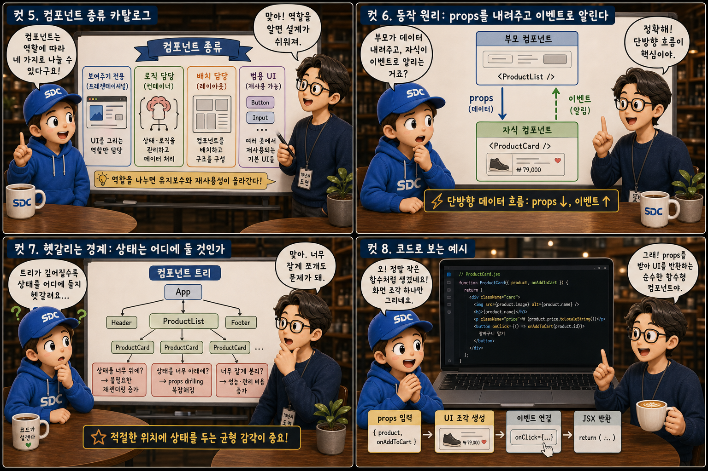
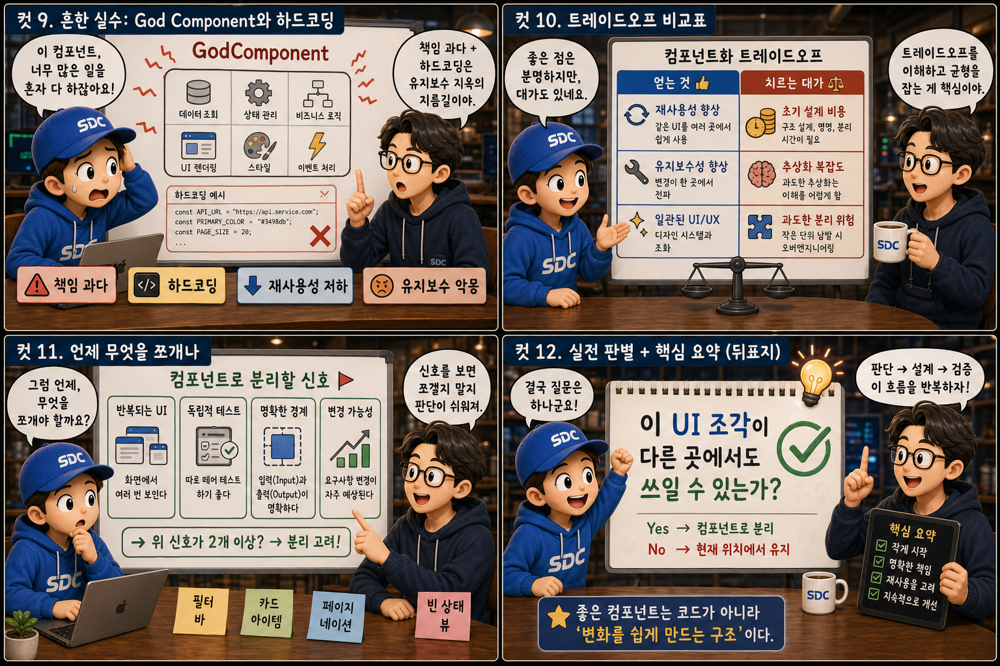

복잡한 웹 화면을 레고 블록 조립에 비유해, 작은 조각으로 나눠 관리 가능하게 만드는 법을 12컷으로 풀어봅니다.
Component＋Assemble
우리가 브라우저에서 보는 하나의 화면은 사실 처음부터 통짜로 만들어지지 않습니다. 완성된 웹페이지를 폭발도처럼 분해해 보면, 헤더는 긴 직사각형 블록으로, 버튼은 작은 정육면체로, 카드는 넓적한 판으로 흩어집니다. 이 조각 하나하나가 프론트엔드 개발에서 말하는 컴포넌트(component)이고, 조각들을 이어붙이는 규칙이 조립(props와 이벤트)입니다. 이 글에서는 레고 블록 같은 컴포넌트가 무엇이고 왜 필요한지, 어떻게 쪼개고 어떻게 이어붙이는지를 하나씩 살펴봅니다.
PART 1 / 3 — 블록의 발견 (컷 01–04)
fourcut-01 — 컷 01 ~ 04
컷 01
이 화면은 무엇으로 이루어져 있나
완성된 웹 화면도 사실은 레고 블록처럼 작은 조각들이 조립된 결과물이다.
헤더, 카드 목록, 버튼이 가지런히 놓인 평범한 웹페이지 하나가 하늘에 떠 있습니다. 그 화면이 폭발도(exploded view)처럼 서서히 분해되면, 조각들은 하늘색 레고 블록으로 변합니다. 헤더는 긴 직사각형 블록, 버튼은 작은 정육면체, 카드는 넓적한 판 블록 — 그리고 블록 사이사이에는 호박색 커넥터가 연결선처럼 반짝입니다. 이 조각 하나하나가 바로 컴포넌트이며, 이번 이야기는 이 레고 블록 같은 컴포넌트가 무엇이고 왜 필요한지를 다룹니다.
컷 02
정의부터: 컴포넌트란 무엇인가
컴포넌트는 UI의 겉모습(마크업)과 그 동작 로직을 하나로 묶은, 독립적으로 재사용 가능한 단위다.
레고 블록 하나를 클로즈업해 보면, 겉면에는 버튼 아이콘이 그려져 있고(겉모습), 반투명한 내부에는 톱니바퀴가 들어 있습니다(동작 로직). 컴포넌트란 이렇게 화면의 일부분을 그리는 마크업과 그 부분이 어떻게 동작할지 결정하는 로직을 하나의 단위로 묶어놓은 것입니다. 버튼 컴포넌트는 버튼처럼 보이는 모양과 클릭했을 때 실행될 동작을 함께 가지고 있습니다. 이렇게 묶어두면 이 조각을 다른 화면에서도 그대로 가져다 쓸 수 있고, 이 조각만 따로 떼어 테스트하거나 수정할 수 있습니다. 모양(마크업) + 동작(로직) = 하나의 블록
컷 03
나란히 비교: 거대한 코드 덩어리 vs 컴포넌트 트리
컴포넌트 없이 만든 화면은 뒤엉킨 하나의 실타래고, 컴포넌트로 쪼갠 화면은 정돈된 조립 구조도다.
컴포넌트 개념 없이 화면을 만들면 헤더, 목록, 버튼의 코드와 상태가 한 파일 안에 뒤섞여, 어디를 고쳐야 무엇이 바뀌는지 알기 어려운 거대한 회색 실타래가 됩니다. 반면 컴포넌트로 나누면 화면은 뿌리에서 가지로 뻗어나가는 트리 구조가 되어, 각 가지(컴포넌트)가 자신의 역할만 책임집니다. 가지 끝마다 헤더, 버튼, 카드 블록이 달려 있고 연결선은 호박색 커넥터로 이어져 있는 구조도 — 같은 화면이라도 구조가 다르면 특정 부분만 골라 찾고, 고치고, 재사용하는 일의 난이도가 완전히 달라집니다.
컷 04
핵심 원칙: 권위 있는 정의 한 장
“UI를 독립적이고 재사용 가능한 조각으로 나누고, 각 조각을 개별적으로 다룬다.”
독립적 (INDEPENDENT)
다른 조각의 내부 사정을 몰라도 동작한다
재사용 가능 (REUSABLE)
한 번 만들면 여러 화면에서 다시 쓸 수 있다
core principle
이것이 컴포넌트 기반 설계의 핵심 원칙입니다. 여기서 중요한 단어는 두 개인데, 하나는 독립적 — 다른 조각의 내부 사정을 몰라도 동작해야 한다는 뜻이고, 다른 하나는 재사용 가능 — 한 번 만들면 여러 화면에서 다시 쓸 수 있어야 한다는 뜻입니다.
PART 2 / 3 — 종류와 동작 원리 (컷 05–08)

fourcut-02 — 컷 05 ~ 08
컷 05
컴포넌트 종류 카탈로그: 네 가지 블록
컴포넌트는 역할에 따라 보여주기 전용, 로직 담당, 배치 담당, 범용 UI의 네 가지로 나눌 수 있다.
조립 설명서의 부품표처럼 네 칸으로 나눠 보면 이렇습니다. Presentational 컴포넌트는 데이터를 받아 화면에 보여주기만 하고 로직은 갖지 않습니다. Container 컴포넌트는 데이터를 가져오고 상태를 관리하는 로직을 담당합니다. Layout 컴포넌트는 다른 컴포넌트들을 배치하는 틀 역할을 하며, Reusable UI 컴포넌트는 버튼이나 입력창처럼 어디서든 쓰이는 범용 부품입니다. 이렇게 역할을 나누면 각 블록이 딱 한 가지 책임만 지게 되어 설계가 명확해집니다.
컷 06
동작 원리: props를 내려주고 이벤트로 알린다
부모는 props로 데이터를 자식에게 내려주고, 자식은 이벤트로 부모에게 알리는 단방향 흐름으로 동작한다.
부모 컴포넌트 (state)→props (데이터 전달)→자식 컴포넌트→event (알림)→부모가 상태 변경→props 재전달
컴포넌트들은 부모와 자식 관계로 연결되어 하나의 트리를 이루는데, 데이터는 항상 부모에서 자식으로 props를 통해 전달됩니다. 자식은 자신의 상태를 직접 바꾸지 않고, 대신 이벤트를 발생시켜 부모에게 “이런 일이 일어났다”고 알립니다. 위에서 아래로는 데이터, 아래에서 위로는 알림만 — 이 단방향 흐름 덕분에 데이터가 어디서 와서 어디로 가는지 추적하기 쉬워지고, 예상치 못한 부작용이 줄어듭니다.
컷 07
헷갈리는 경계: 상태는 어디에 둘 것인가
컴포넌트 트리가 깊어질수록 상태를 어디에 둘지 헷갈리며, 너무 잘게 쪼개는 것도 문제가 될 수 있다.
트리가 5단 이상 깊어지면, 가장 깊은 곳의 작은 블록 하나가 물음표를 띄운 채 어느 조상에게 상태를 맡겨야 할지 갈팡질팡하게 됩니다. 여러 자식이 공유해야 하는 상태는 흔히 상태 끌어올리기(lifting state up)라는 방법으로 공통 조상에 두고 내려보내지만, 무작정 최상위에 몰아넣으면 다시 거대한 덩어리 문제로 되돌아갑니다. 반대로 컴포넌트를 지나치게 잘게 쪼개면 props를 여러 단계 거쳐 전달하는 번거로움이 커집니다. 한쪽 접시에는 “과도한 분리”, 다른 쪽에는 “적절한 균형”이 올라간 저울 — 너무 잘게 쪼개도, 너무 뭉쳐도 문제이므로 적절한 크기의 균형을 찾는 감각이 필요합니다.
컷 08
코드로 보는 컴포넌트: 작은 함수 하나
실제 컴포넌트 코드는 props를 받아 화면 조각 하나를 그려내는 작은 함수의 형태를 띤다.
Button.jsx — 블록의 설계도
// props를 받아 화면 조각을 그려내는 작은 함수function Button({ label, onClick }) {
return <button onClick={onClick}>{label}</button>;
}
App.jsx — 블록의 재사용
// 같은 블록, 다른 props로 어디서든 재사용
<Button label="저장" onClick={save} />
<Button label="취소" onClick={cancel} />
이 함수는 label과 onClick이라는 props를 받아, 그 값에 맞는 버튼 마크업을 반환합니다. 이 함수 하나가 곧 하나의 컴포넌트이며, 어느 화면에서 어떤 label과 onClick을 넘기든 똑같은 방식으로 재사용됩니다. props로 들어오는 부분이 블록의 ‘끼우는 홈’이고, 반환되는 마크업이 블록의 ‘겉모습’인 셈입니다.
PART 3 / 3 — 실전 감각과 요약 (컷 09–12)

fourcut-03 — 컷 09 ~ 12
컷 09
흔한 실수: God Component와 하드코딩
하나의 컴포넌트가 너무 많은 책임을 떠맡거나, 값을 하드코딩하면 재사용성과 유지보수성이 무너진다.
⚠ god component & hardcoded values
God Component란 하나의 컴포넌트가 데이터 조회, 상태 관리, 화면 렌더링, 이벤트 처리까지 모든 책임을 떠맡아버린 상태입니다. 무게를 못 이겨 금이 간 거대 블록처럼, 작은 수정 하나에도 전체가 흔들리고 재사용이 불가능해집니다. props로 받아야 할 값을 컴포넌트 안에 직접 못처럼 박아버리는 하드코딩도 마찬가지로, 다른 화면에서 같은 컴포넌트를 다른 값으로 재사용할 수 없게 만듭니다.
✓ single responsibility + open props
좋은 컴포넌트는 책임을 최소한으로 좁히고, 달라질 수 있는 값은 반드시 props로 열어둡니다. 작고 단정한 블록들이 나란히 줄지어 각자의 역할만 맡는 상태 — 그것이 목표입니다.
여러 색과 여러 아이콘을 한 몸에 다닥다닥 붙인 채 금이 가 있는 거대 블록을 상상해 보세요. 책임 과잉과 하드코딩, 이 둘을 경계하는 것이 컴포넌트 설계의 첫 번째 위생 수칙입니다.
컷 10
트레이드오프 비교표: 공짜 이득은 없다
컴포넌트화는 재사용성과 유지보수성을 높이지만 초기 설계 비용이라는 대가를 치른다.
no free lunch — invest in design time
비교 축
컴포넌트화 안 함
컴포넌트화 함
재사용성
같은 UI도 매번 다시 작성
한 번 만들어 여러 화면에서 재사용
테스트 용이성
화면 전체를 통째로 검증
조각 단위로 떼어 개별 테스트
유지보수성
수정 영향 범위 예측 어려움
해당 블록만 고치면 됨
초기 설계 비용
낮음 — 일단 빠르게 작성
높음 — 쪼개는 단위와 props 설계에 시간 투자
컴포넌트화는 재사용성, 테스트 용이성, 장기적인 유지보수성을 크게 끌어올립니다. 다만 처음부터 어떤 단위로 쪼갤지 고민하고 props 인터페이스를 설계하는 데 시간이 더 들기 때문에, 초기 설계 비용은 오히려 더 높아질 수 있습니다. 이 트레이드오프를 이해하면 작은 프로토타입에서는 대충 만들고, 규모가 커질 화면일수록 컴포넌트 설계에 시간을 투자하는 균형 잡힌 선택을 할 수 있습니다.
컷 11
언제 무엇을 쪼개나
화면에서 반복되거나 독립적으로 테스트하고 싶은 단위가 있다면 그것이 컴포넌트로 분리할 신호다.
🔍 이런 신호가 보이면 → 컴포넌트로 분리
같은 모양이 여러 번 반복해서 나타난다
다른 부분과 독립적으로 수정하고 싶다
따로 떼어 테스트하고 싶은 단위다
🔍 이런 경우라면 → 쪼갤 필요 없음
딱 한 번만 등장하는 단순한 조각이다
다른 부분과 강하게 얽혀 있다
분리해도 재사용할 곳이 없다
화면 안에서 같은 모양의 카드가 세 개, 네 개 반복되어 나타난다면 그것은 컴포넌트로 분리하라는 강한 신호입니다. 또한 어떤 부분을 다른 부분과 독립적으로 수정하거나 테스트하고 싶다면, 그 경계 자체가 컴포넌트의 경계가 되어야 합니다. 반대로 딱 한 번만 등장하고 다른 부분과 강하게 얽혀 있는 조각까지 억지로 분리할 필요는 없습니다. “반복되는가? 독립적으로 다루고 싶은가?” — 이 두 질문이 분기점입니다.
컷 12
실전 판별과 핵심 요약: 다른 곳에서도 쓸 수 있는가
“이 UI 조각이 다른 곳에서도 쓰일 수 있는가”라는 질문 하나로 컴포넌트 여부를 판별할 수 있다.
어떤 UI 조각을 컴포넌트로 만들지 고민될 때 가장 실용적인 질문은 이것입니다 — “이 조각이 다른 화면이나 다른 맥락에서도 쓰일 수 있는가?” 그렇다고 답할 수 있다면 그 조각은 독립된 컴포넌트로 분리할 가치가 있습니다. 씬 01에서 흩어졌던 조각들이 다시 합쳐져 완성된 레고 모형이 되었듯, 컴포넌트는 UI와 로직을 하나로 묶은 재사용 단위이며 props와 이벤트로 부모 자식이 소통하고, 역할에 따라 종류가 나뉘고, 책임을 과하게 떠맡지 않도록 경계해야 하며, 재사용성과 설계 비용 사이의 트레이드오프를 이해하는 것이 핵심입니다.
정의props·이벤트종류책임 분리트레이드오프판별법
작은 조각이 모여 큰 화면이 된다
컴포넌트는 겉모습과 동작을 하나로 묶은 레고 블록이고, 화면은 그 블록들이 트리로 조립된 결과물입니다. 블록을 잘 설계해두면, 그 조각들이 모여 언제든 새로운 화면을 빠르게 조립해낼 수 있습니다.